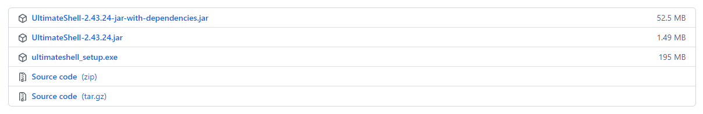

安装
TIPS
ultimateshell有一个工作空间（目录）在第一次运行时创建，相关数据皆在其中。第一次安装完成（或运行一次）后，根据需要克隆下载
Xpack-Tools 功能增强包方可使用部分增强功能，如：FreeRDP、Nuclei PoC-概念验证框架等。
发布版本

UltimateShell-x.x.x-jar-with-dependencies.jar：打包了完整的依赖包（平台通用）UltimateShell-x.x.x.jar：没有打包任何依赖包ultimateshell_setup.exe：Windows安装程序（Windows专用）
Windows 安装
 Windows
Windows ultimateshell_setup.exe 安装包
不会吧，不会吧，不会还有人不懂双击Windows安装程序安装软件吧。
 通用包
通用包 UltimateShell-x.x.x-jar-with-dependencies.jar
-
已安装JDK，并配置了系统环境变量（不懂的建议百度），可
双击执行，或者命令执行java -jar UltimateShell-x.x.x-jar-with-dependencies.jar -
没有配置环境变量的可以使用
java程序的绝对路径，D:\jdk-11\bin\java.exe -jar java -jar UltimateShell-x.x.x-jar-with-dependencies.jar
 最小体积
最小体积 UltimateShell-x.x.x.jar
同上，只不过没有将pom.xml中依赖的jar包打包进去，所以需要自己去源码中找jar包放到类加载路径中，好自为之。
Linux 安装
建议使用平台通用包 java -jar UltimateShell-x.x.x-jar-with-dependencies.jar
MacOS 安装
建议使用平台通用包 java -jar UltimateShell-x.x.x-jar-with-dependencies.jar
Xpack-Tools 功能增强包
Git 克隆增强包放置到 ultimateshell 工作空间的 tools 目录下，如：C:\Users\G3G4X5X6\.ultimateshell\tools
# 也可以自己按照仓库的目录结构创建目录，从官网下载工具
git clone https://github.com/G3G4X5X6/xpack_tools.git